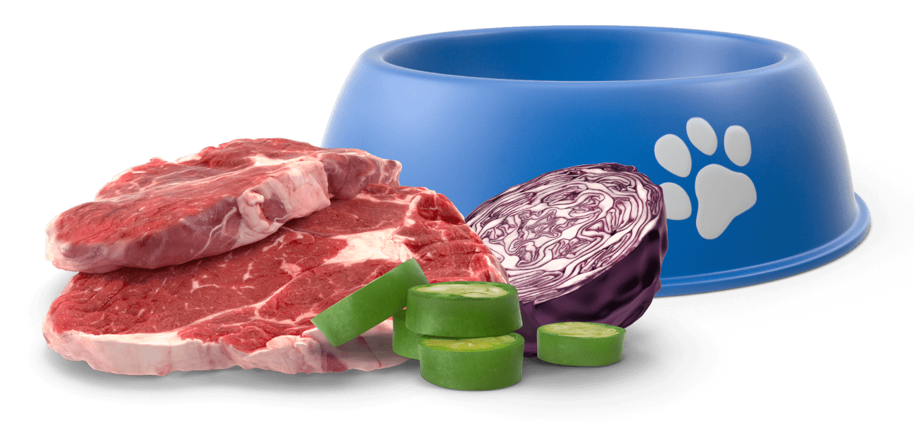
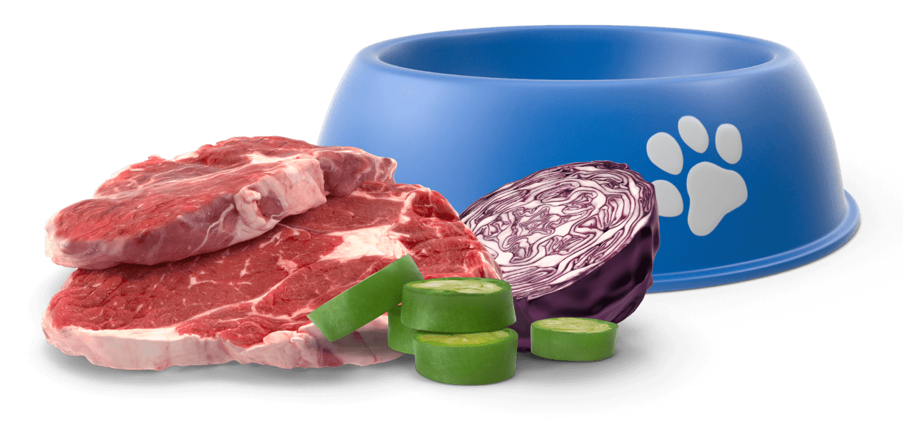
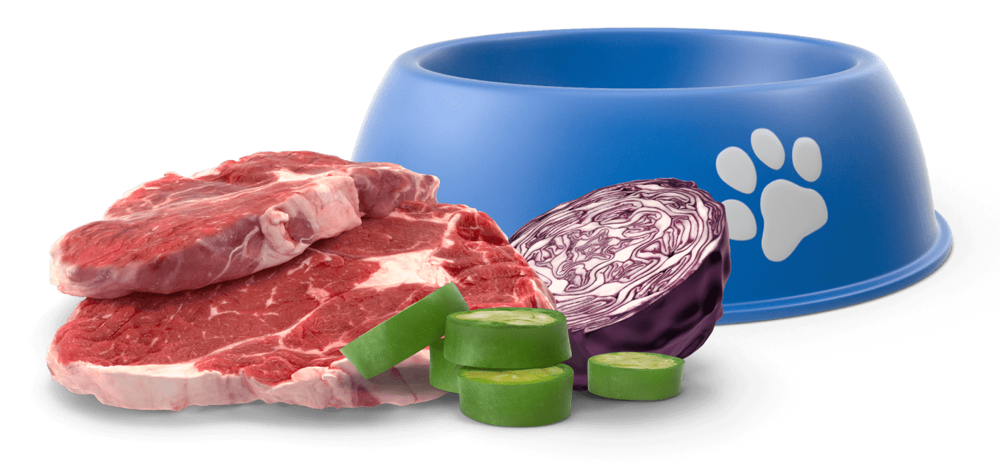
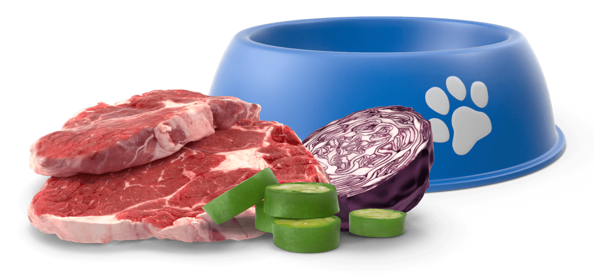

La dieta BARF o ACBA se basa en alimentar a los perros con comida cruda siguiendo su nutrición original como animales carnívoros. Este modo de alimentación incluye carne fresca, vísceras, verduras, vitaminas y suplementos de minerales. Trata de imitar, en la medida de lo posible, las presas que los canes cazarían en la naturaleza.
Estos componen el 60% del plato porque son una gran fuente de energía para el perro, aportan proteínas, grasas y calcio, entre otras vitaminas y minerales.
Al igual que los huesos, la carne magra dentro de la dieta BARF también debe estar cruda.
Estos componentes de la dieta también deben estar lo más frescos posibles y tener una procedencia de confianza.

Al igual que sucede con todos los métodos de alimentación, la comida cruda para perros también tiene sus defensores y detractores. Los defensores de la dieta BARF destacan la buena salud de la dentadura de los canes como consecuencia de la masticación intensa de la carne fresca, el brillo del pelo, la mejora de las enfermedades crónicas como la artrosis y los problemas de crecimiento, y el fortalecimiento de los tendones y ligamentos. La comida cruda se adapta de manera exacta a las necesidades de cada perro y no contiene ningún tipo de ingredientes de relleno ni conservante. No es de extrañar que la dieta BARF resulte especialmente beneficiosa para los canes enfermos o con exigencias nutricionales específicas.

Hemos de recordar que el perro es un descendiente directo del lobo. Amaestrado y socializado durante siglos, evolucionó hasta lo que hoy conocemos como perros o animales de compañía.
Potencializa el Sistema Inmunológico
Vitaminas como la B12 y B6
Mejorara la calidad nutricional
El omega-3 proviene ataques al corazón